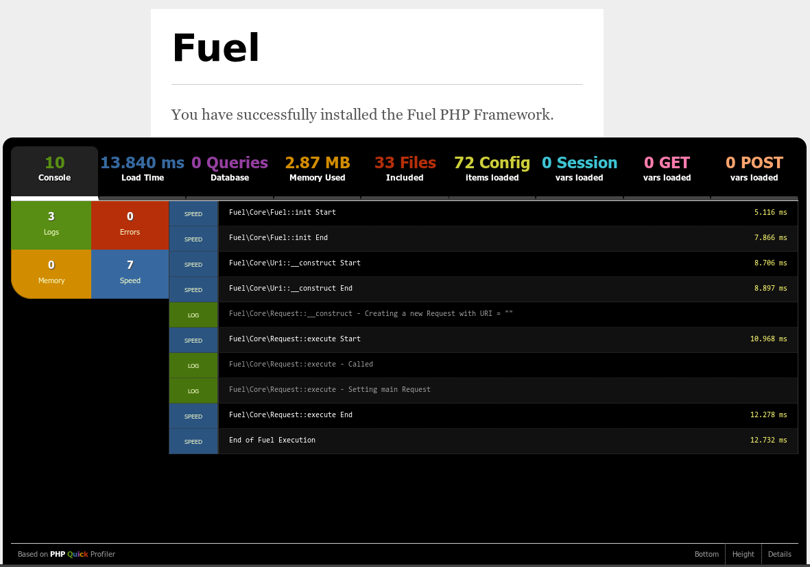

剖析
綁定於 FuelPHP 的應用程式分析器是基於 PHP Quick Profiler。
剖析是什麼？
The profiler provides profiling and debugging related information without needing them to add a lot of programmatic overhead to the code. You only need to toggle one config setting to true and you have access to an automated tool to help create a faster and more consistent review experience. Since anyone can use it, the profiler also gives you an idea of where the code stands before the review.
分析器提供一個標籤介面，你可以在其中找到以下資訊：
- Console. This is the default tab, and gives you information about errors, log entries, memory usage or execution timings.
- Load time. This is the request load time. It will display execution details in the body of the tab.
- Database. The number of queries executed, the execution time, and if supported, a query analysis.
- Memory. Total peak memory used by the request.
- Files. The fully qualified name of all PHP files included, and their size.
- Config. The contents of the configuration store at the end of the request.
- Session. The contents of the session store at the end of the request.
- GET. The contents of the $_GET array.
- POST. The contents of the $_POST array.
一個典型的分析器螢幕看起來像這樣：
在分析器螢幕的底部，你將發現三個選項：
- Bottom. By default, the profiler is an overlay. Click on this option if you want to see all output, the profiler will move past the end of your output. Click again and it will move back.
- Height. Toggle between a large (like in the screenshot) or small profiler panel.
- Details. Toggle the profiler details. If switched off, only the tab bar will be visible.
應用程式剖析
剖析你的應用程式預設是停用的。你可以配置 Fuel 去啟動分析器藉由你的應用程式 config/config.php 檔案。
'profiling' => true,
After the profiler has been enabled, you will see it pop up at the bottom of your browser window.
資料庫剖析
剖析你的資料庫連線預設也是停用的。Database profiling is activated on a per connection basis, and can be activated by setting the 'profiler' option of the connection configuration in your config/db.php to true.
'profiling' => true,
如果你使用多個環境，確認選擇正確的 db.php 配置檔案。
添加資訊到分析器
見 Profiler 類別的文件，以了解你能如何與分析器互動。